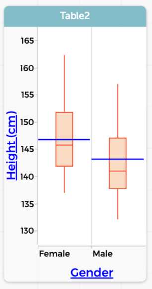
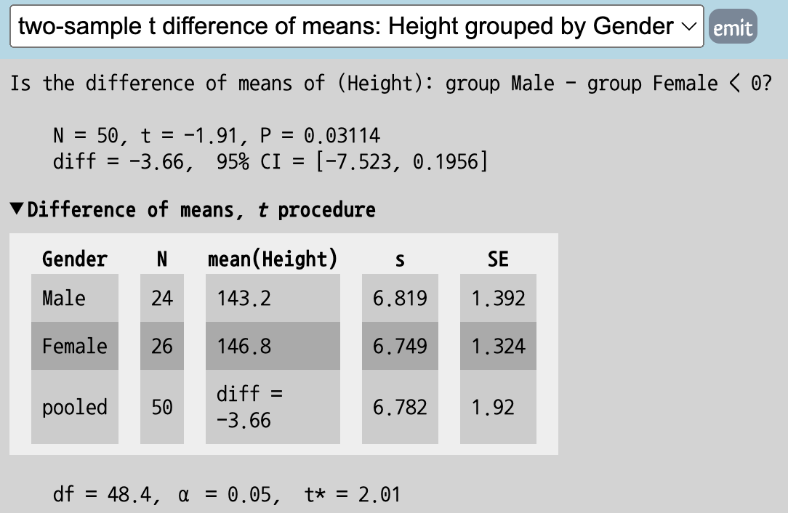
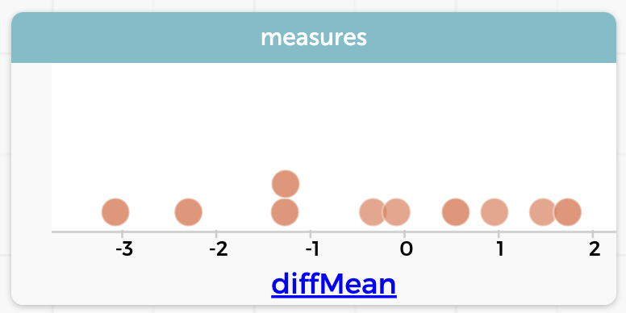

Statistical investigation
CODAP is a data analysis platform, so we expect it to help with statitical investigations. Here is a relatively simple example.
Suppose we’re interested in gender differences in height, and remember that at about ages 10–12, girls are generally taller than boys.
Is that really true?
We collect data on some ten-year-olds and plot the results, as you can see in the graph in the live example below. The blue lines are the mean heights of the groups; you can “hover” over the lines to see the values.
We have also calculated the difference of means in the left-hand column, diffMean: in this sample, the mean height for the girls is 3.66 cm greater than the mean height for boys.
Of course, your students could make that graph themselves, and maybe draw the obvious conclusion: we were right, at age 10, girls are taller. And we should admit that, with 51 cases, making the graph and doing the calculation by hand would be tedious and error-prone.
But what else can students get out of using CODAP for this task? Here are some simple ideas:

- If the data are from their own school, they can find themselves (or the memory of themselves) in the graph.
- They can go to the ruler palette and make box plots, and compare those to the means1.
- They can see and explore the overlap in the distributions and learn to interpret that overlap, for example, that despite the trend, there are a lot of short girls and tall boys.
- They can investigate other relationships by making other graphs, for example,
HeightagainstUpperArm2.
All of that lives in the realm of exploratory data analysis.
More advanced students can explore whether the difference we see could plausibly be due to chance. Although we could do a formal \(t\)-test…

…many stats educators are turning instead to randomization-based inference.
Feeling brave? Try this:
- Open the
scrambleritem by clicking the minus-sign that appears when you hover over it. We have already set it up for you. - Click the
10xbutton. A new table appears, with “scrambled” values for the difference of means,diffMean. Graph those values.

These are values for the difference of means (female minus male) when we have scrambled the values for Gender and thereby removed any association between Gender and Height.3 The question is, is our true test statistic of 3.66 “plausible” in this case? Does it occur very often among scrambled datasets? Our graph of 10 scrambles, above, doesn’t show any cases that extreme—but we only have ten!
Here’s what ours looked like after 400 scrambles; we have also gone to the ruler palette to add two movable values and to ask CODAP to show the counts and percentages:

Now we need to decide: is this a one-tailed or two-tailed situation? And do we consider 3% (or 6%) rare enough to be implausible?
A takeaway, we hope, is that CODAP gives you a tool and an environment that can serve students from the very first bit of EDA all the way through formal inference.